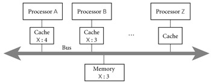

|
|
|
|
12.1 Background and Motivation
Concurrency is not a new idea. Much of the theoretical
groundwork was laid in the 1960s, and Algol 68 includes concurrent programming
features. Widespread interest in concurrency is a relatively recent phenomenon,
however; it stems in part from the availability of low-cost multicore and
multiprocessor machines, and in part from the proliferation of graphical,
multimedia, and web-based applications, all of which are naturally represented
by concurrent threads of control.
Parallelism arises at every level of a modern computer
system. It is comparatively easy to exploit at the level of circuits and gates,
where signals can propagate down thousands of connections at once. As we move
up first to processors and then to the many layers of software that run on top
of them, the granularity of parallelism―the size and complexity of
tasks―increases at every level, and it becomes
increasingly difficult to figure out what work should be done by each task and
how tasks should coordinate.
For 40 years, microarchitectural research was largely
devoted to finding more and better ways to exploit the instruction-level
parallelism (ILP) available in machine language programs. As we saw in Chapter 5, the combination of deep, superscalar pipelines
and aggressive speculation allows a modern processor to track dependences among
hundreds of "in-flight" instructions, make progress on scores of
them, and complete several in every cycle. Shortly after the turn of the
century, it became apparent that a limit had been reached: there simply wasn't
any more instruction-level parallelism available in conventional programs.
At the next higher level of granularity, so-called vector
parallelism is available in programs that perform operations repeatedly on
every element of a very large data set. Processors designed to exploit this
parallelism were the dominant form of supercomputer from the late 1960s through
the early 1990s. Their legacy lives on in today's single-chip graphics
processors, which have recently reached the level of one trillion floating-point
operations per second (FLOPS)―100 times the performance of the typical
general-purpose processor.
On the CD Unfortunately, vector parallelism arises in only
certain kinds of programs. Given the end of ILP, and the limits on clock
frequency imposed by heat dissipation (Section 5.4.4), general-purpose
computing has moved to multicore processors, which require coarser-grain
thread-level parallelism. This move represents a fundamental shift in
the nature of computing: where parallelism was once a largely invisible
implementation detail, it must now be written explicitly into high-level
program structure.
With the spread of thread-level parallelism, different kinds
of programmers will need to understand concurrency at different levels of
detail, and use it in different ways.
The simplest, most abstract case will arise when using
"black box" parallel libraries. A sorting routine or a linear algebra
package, for example, may execute in parallel without its caller needing to
understand how. In the database world, queries expressed in SQL (Structured
Query Language) often execute in parallel as well. Recent releases of the .NET
Framework include a Language Integrated Query mechanism (LINQ) that
allows database-style queries to be made of program data structures, again with
parallelism "under the hood."
Example
12.1: Independent tasks in Parallel FX
|
|
At a slightly less abstract level, a programmer may know
that certain tasks are mutually independent (because, for example, they access
disjoint sets of variables). Such tasks can safely execute in parallel.[1] In
C# 3.0, for example, we can write the following using the Parallel FX Library.
Parallel.For(0,
100, i => { A[i] = foo(A[i]); } );
The first two arguments to Parallel.For are "loop" bounds; the third is a delegate, here
written as a lambda expression. Assuming A is a 100-element array, and that the invocations of foo are truly independent, this code will have the same effect
as the obvious traditional for loop, except that it will run faster, making use of as many
processors (up to 100) as possible.
|
|
Example
12.2: A simple race condition
|
|
If our tasks are not independent, it may still be
possible to run them in parallel if we explicitly synchronize their
interactions. Synchronization serves to eliminate races between threads
by controlling the ways in which their actions can interleave in time. Suppose
function foo
in the previous example subtracts 1 from A[i] and also counts the number of times that the result is
zero. Naively we might implement foo as
int
zero_count;
public
static int foo(int n) {
int rtn = n - 1;
if (rtn == 0) zero_count++;
return rtn;
}
Consider now what may happen when two or more instances of
this code run concurrently.
|
Thread 1 |
|
|
… r1 :=
zero_count r1 := r1 + 1 Zero_count := r1
… |
Thread 2 |
|
… r1 :=
zero_count r1 := r1 + 1 Zero_count := r1
… |
If the instructions interleave roughly as shown, both threads
may load the same value of zero_count, both may increment it by 1, and both may
store the (only 1 greater) value back into zero_count. The result may be 1 less
than what we expect.
In general, a race condition occurs whenever two or
more threads are "racing" toward points in the code at which they
touch some common object, and the behavior of the system depends on which
thread gets there first. In this particular example, the store of zero_count in
Thread 1 is racing with the load in Thread 2. If Thread 1 gets there first, we
will get the "right" result; if Thread 2 gets there first, we won't.
|
|
The most common purpose of synchronization is to make some
sequence of instructions, known as a critical section, appear to be atomic―to
happen "all at once" from the point of view of every other thread. In
our example, the critical section is a load, an increment, and a store. The
most common way to make the sequence atomic is with a mutual exclusion lock,
which we acquire before the first instruction of the sequence and release
after the last. We will study locks in Sections 12.3.1 and 12.3.5. In Sections 12.3.2 and 12.4.4 we will also consider mechanisms that achieve
atomicity without locks.
At the lowest level of abstraction, expert programmers may
need to understand the hardware and run-time system in sufficient detail to implement
synchronization mechanisms. This chapter should convey a sense of the issues,
but a full treatment at this level is is beyond the scope of the current text.
12.1.1 The Case for Multithreaded Programs
On the CD Our first motivation for concurrency―to capture the
logical structure of certain applications―has arisen several times in earlier
chapters. In Section 7.9.1 we noted that interactive I/O must often interrupt
the execution of the current program. In a video game, for example, we must
handle keystrokes and mouse or joystick motions while continually updating the
image on the screen. The standard way to structure such a program, as described
in Section 8.7.2, is to execute the input handlers in a
separate thread of control, which coexists with one or more threads responsible
for updating the screen. In Section 8.6, we considered a screen saver program that used
coroutines to interleave "sanity checks" on the file system with
updates to a moving picture on the screen. We also considered discrete-event
simulation, which uses coroutines to represent the active entities of some
real-world system.
The semantics of discrete-event simulation require that
events occur atomically at fixed points in time. Coroutines provide a natural
implementation, because they execute one at a time. In our other examples,
however―and indeed in most "naturally concurrent" programs―there is
no need for coroutine semantics. By assigning concurrent tasks to threads
instead of to coroutines, we acknowledge that those tasks can proceed in
parallel if more than one processor is available. We also move responsibility
for figuring out which thread should run when from the programmer to the
language implementation.
Example
12.3: Multithreaded web browser
|
|
The need for multithreaded programs has become particularly
apparent in recent years with the development of web-based applications. In a
browser such as Firefox or Internet Explorer (see Figure
12.1), there are typically many different threads simultaneously active,
each of which is likely to communicate with a remote (and possibly very slow)
server several times before completing its task. When the user clicks on a
link, the browser creates a thread to request the specified document. For all
but the tiniest pages, this thread will then receive a long series of message
"packets." As these packets begin to arrive the thread must format
them for presentation on the screen. The formatting task is akin to
typesetting: the thread must access fonts, assemble words, and break the words
into lines. For many special tags within the page, the formatting thread will
spawn additional threads: one for each image, one for the background if any,
one to format each table, and possibly more to handle separate frames. Each
spawned thread will communicate with the server to obtain the information it
needs (e.g., the contents of an image) for its particular task. The user,
meanwhile, can access items in menus to create
new browser windows, edit bookmarks, change preferences, and so on, all in
"parallel" with the rendering of page elements.
|
|
procedure parse_page(address : url)
contact server, request page contents
parse_html_header
while
current_token in {"<p>", "<h1>",
"<ul>", … ,
"<background", "<image",
"<table", "<frameset", … }
case current_token of
"<p>"
: break_paragraph
"<h1>" : format_heading;
match("</h1>")
"<ul>" : format_list;
match("</ul>")
…
"<background" :
a : attributes := parse_attributes
fork
render_background(a)
"<image"
: a : attributes :=
parse_attributes
fork render_image(a)
"<table" : a : attributes :=
parse_attributes
scan forward for "</table>" token
token_stream s :=… -- table
contents
fork format_table(s, a)
"<frameset" :
a : attributes := parse_attributes
parse_frame_list(a)
match("</frameset>")
…
…
procedure parse_frame list(a1 : attributes)
while
current_token in {"<frame", "<frameset",
"<noframes>"}
case current_token of
"<frame" : a2 : attributes := parse_attributes
fork format_frame(a1, a2)
…
|
|
Figure 12.1: Thread-based
code from a hypothetical Web browser. To first approximation, the parse_page subroutine is the
root of a recursive descent parser for HTML. In several cases, however, the
actions associated with recognition of a construct (background, image, table,
frameset) proceed concurrently with continued parsing of the page itself. In
this example, concurrent threads are created with the fork operation. An
additional thread would likely execute in response to keyboard and mouse
events.
|
|
The use of many threads ensures that comparatively fast
operations (e.g., display of text) do not wait for slow operations (e.g.,
display of large images). Whenever one thread blocks (waits for a
message or I/O), the implementation automatically switches to a different
thread. In a preemptive thread package, the implementation switches
among threads at other times as well (i.e., it performs a context switch),
to prevent any one thread from hogging the CPU. Any reader who remembers the early, more
sequential browsers will appreciate the difference that multithreading makes in
perceived performance and responsiveness.
Example
12.4: Dispatch loop web browser
|
|
Without language or library support for threads, a browser
must either adopt a more sequential structure, or centralize the handling of
all delay-inducing events in a single dispatch loop (see Figure
12.2). Data structures associated with the dispatch loop keep track of all
the tasks the browser has yet to complete. The state of a task may be quite
complicated. For the high-level task of rendering a page, the state must
indicate which packets have been received and which are still outstanding. It
must also identify the various subtasks of the page (images, tables, frames,
etc.) so that we can find them all and reclaim their state if the user clicks
on a "stop" button.
|
|
--
fields in lieu of thread-local variables, plus control-flow information
…
ready_tasks : queue of task_descriptor
…
procedure dispatch
loop
-- try to do something input-driven
if a new event E (message, keystroke, etc.) is available
if an existing task T is waiting for E
continue_task(T, E)
else
if E can be handled quickly, do so
else
allocate and initialize new task T
continue_task (T, E)
-- now do something compute bound
if ready_tasks is nonempty
continue_task (dequeue(ready_tasks), 'ok')
procedure continue_task (T : task, E : event)
if T is
rendering an image
and E is a message containing the next block of data
continue_image render(T, E)
else if T is formatting a page
and E is a message containing the next block of data
continue_page_parse(T,
E)
else if T is formatting a page
and E is 'ok' -- we're
compute bound
continue_page_parse(T,
E)
else if T is reading the bookmarks file
and E is an I/O completion event
continue_goto_page(T, E)
else if T
is formatting a frame
and E is a push of the "stop" button
deallocate T and all tasks dependent upon it
else if E
is the "edit_preferences" menu item
edit_preferences(T, E)
else if T
is already editing preferences
and
E is a newly typed keystroke
edit_preferences(T, E)
…
|
|
Figure 12.2: Dispatch
loop from a hypothetical non―thread-based Web browser. The clauses in continue_task must
cover all possible combinations of task state and triggering event. The code in
each clause performs the next coherent unit of work for its task, returning
when (1) it must wait for an event, (2) it has consumed a significant amount of
compute time, or (3) the task is complete. Prior to returning, respectively,
code (1) places the task in a dictionary (used by dispatch) that maps awaited
events to the tasks that are waiting for them, (2) enqueues the task in
ready_tasks, or (3) deallocates the task.
To guarantee good interactive response, we must make sure
that no subaction of continue_task takes very long to execute. Clearly we must
end the current action whenever we wait for a message. We must also end it
whenever we read from a file, since disk operations are slow. Finally, if any
task needs to compute for longer than about a tenth of a second (the typical
human perceptual threshold), then we must divide the task into pieces, between
which we save state and return to the top of the loop. These considerations
imply that the condition at the top of the loop must cover the full range of
asynchronous events, and that evaluations of the condition must be interleaved
with continued execution of any tasks that were subdivided due to lengthy
computation. (In practice we would probably need a more sophisticated mechanism
than simple interleaving to ensure that neither input-driven nor compute-bound
tasks hog more than their share of resources.)
|
|
The principal problem with a dispatch loop―beyond the
complexity of subdividing tasks and saving state―is that it hides the
algorithmic structure of the program. Every distinct task (retrieving a page, rendering
an image, walking through nested menus) could be described elegantly with
standard control-flow mechanisms, if not for the fact that we must return to
the top of the dispatch loop at every delay-inducing operation. In effect, the
dispatch loop turns the program "inside out," making the management
of tasks explicit and the control flow within tasks implicit. The resulting
complexity is similar to what we encountered when trying to enumerate a
recursive set with iterator objects in Section 6.5.3, only worse. Like true iterators, a thread
package turns the program "right side out," making the management of
tasks (threads) implicit and the control flow within threads explicit.
12.1.2 Multiprocessor Architecture
Single-site (nondistributed) parallel computers can be
grouped into two broad categories: those in which processors share access to
common memory, and those in which they must communicate with messages. Shared-memory
machines are typically referred to as multiprocessors, though
occasionally one hears that term applied to message-based machines as well. A
multiprocessor typically occupies a single chassis, in which the processors
share not only memory, but also disks, power supplies, and a single copy of the
operating system. Some vendors in the 1980s and 1990s sold single-chassis
message-based machines as well, but these have for the most part been displaced
by clusters of PC-class machines.
From the point of view of language or library
implementation, the principal distinction between shared-memory and
message-passing hardware is that messages typically require the active
participation of processors at both ends of the connection: one to send, the
other to receive. On a shared-memory machine, a processor can read and write
remote memory without the assistance of a remote processor. In most cases
remote reads and writes use the same interface (i.e., load and store
instructions) as local reads and writes.
Historically, small shared-memory multiprocessors (2�C8
processors) were often symmetric, in the sense that all memory was
equally distant from all processors. Most larger multiprocessors (and some more
recent small machines) employ a distributed-memory architecture, in which each memory
bank is physically adjacent to a particular processor or small group of
processors. Any processor can access the memory of any other, but local memory
is faster. Assuming all memory is cached, the difference appears only on cache
misses, where the penalty for local memory is lower.
Design & Implementation
What, exactly, is a processor?
Terminology has yet to gel completely in the multicore era.
For 30 years, a processor was almost always a single chip, and only
microarchitects talked about "cores" (the core was the portion of the
chip devoted to the CPU, as opposed to the cache or other components). Today most
vendors are using "processor" to refer to the physical device that
plugs into a socket on the motherboard, but this definition is likely to become
problematic as future machines evolve toward denser, socket-less designs. Even
today, a single "processor" may have more than one chip inside the
physical package. More significantly, each chip may have multiple cores, each
core may have multiple hardware threads (independent register sets), and
different levels of cache may be shared among different subsets of the cores.
From a software perspective, the good news is that operating
systems and programming languages generally model every concurrent activity as
a thread, whether or not it shares a core, a chip, or a package with other
threads. We will follow this convention for most of the rest of this chapter,
ignoring the complexity of the underlying hardware. We will also, from time to
time, use the term "processor" to refer to the hardware on which a
thread runs, even when that hardware is actually only one core, or one register
set within a core. The bad news is that such simplifications make it difficult
to understand or tune the performance of parallel programs. Future chips are
likely to include ever larger numbers of heterogeneous cores and complex on-chip
networks. To use these chips effectively, researchers will need to develop much
better scheduling algorithms and performance analysis tools.
|
|
Example
12.5: The cache coherence problem
|
|
On a message-passing machine, each processor caches its own
memory independently. On a shared-memory machine, however, caches introduce a
serious problem: unless we do something special, a processor that has cached a
particular memory location will not see changes that are made to that location
by other processors. This problem―how to keep cached copies of a memory
location consistent with one another―is known as the coherence problem
(see Figure
12.3). On bus-based symmetric machines, the problem is relatively easy to
solve: the broadcast nature of the communication medium allows cache
controllers to eavesdrop (snoop) on the memory traffic of other processors.
When a processor needs to write a cache line, it requests an exclusive
copy, and waits for other processors to invalidate their copies. On a
bus the waiting is trivial, and the natural ordering of messages determines who
wins in the event of near-simultaneous requests. Processors that try to access
a line in the wake of invalidation must go back to memory (or to another
processor's cache) to obtain an up-to-date copy.

Figure 12.3: The
cache coherence problem for shared-memory multiprocessors. Here processors A and B have both
read variable X from memory. As a side effect, a copy of X has been created in
the cache of each processor. If A now changes X to 4 and B reads X again, how
do we ensure that the result is a 4 and not the still-cached 3? Similarly, if Z
reads X into its cache, how do we ensure that it obtains the 4 from A's cache
instead of the stale 3 from memory?
|
|
Bus-based cache coherence algorithms are now a standard, built-in
part of most commercial microprocessors. On large machines, the lack of a
broadcast bus makes cache coherence a significantly more difficult problem;
commercial implementations are available, but the subject remains an active
topic of research. On both small and large machines, the fact that coherence is
not instantaneous (it takes time for notifications to propagate) means that we must
consider the order in which updates to different locations appear to
occur from the point of view of different processors. Ensuring a consistent
view is a surprisingly difficult problem; we will return to it in Section 12.3.3.
As of 2008, there are multicore versions of every major
instruction set architecture, including ARM, x86, PowerPC, SPARC, x86-64, and
IA-64 (Itanium). Small, cache-coherent multiprocessors built from these are
available from dozens of manufacturers. Larger, cache-coherent shared-memory
multiprocessors are available from several manufacturers, including Sun, HP,
IBM, and SGI.
Though dwarfed financially by the rest of the computer
industry, supercomputing has always played a disproportionate role in the
development of computer technology and the advancement of human knowledge.
Supercomputers have changed dramatically over time, and they continue to evolve
at a very rapid pace. They have always, however, been parallel machines.
Because of the complexity of cache coherence, it is
difficult to build large shared-memory machines. SGI sells machines with as
many as 512 processors (1024 cores). Cray builds even larger shared-memory
machines, but without the ability to cache remote locations. For the most part,
however, traditional vector machines were displaced not by large
multiprocessors, but by modest numbers of smaller multiprocessors or by very
large numbers of commodity (mainstream) uniprocessors, connected by custom
high-performance networks. As network technology "trickled down" into
the broader market, these machines have in turn given way to clusters composed
of both commodity processors (often multicore) and commodity networks (Gigabit
Ethernet or Infiniband). As of 2008, clusters have come to dominate everything
from modest server farms up to all but the very fastest supercomputer sites.
Large-scale on-line services like Google, Amazon, or eBay are typically backed
by clusters with hundreds or even thousands of processors (in Google's case, probably
hundreds of thousands).
Today's fastest machines are constructed from special
high-density, low-power multicore chips. IBM's BlueGene/P systems use custom
four-core, 16W PowerPC processors. IBM's recently completed RoadRunner system
(the fastest in the world as of June 2008) uses 90W PowerXCell processors
similar (but not identical) to the ones in the Sony Playstation 3. Each Cell
processor contains a dual-thread PowerPC and eight small vector cores. Given
current trends, it seems likely that future machines, both high-end and
commodity, will be increasingly dense and increasingly heterogeneous.
From a programming language perspective, the special
challenge of supercomputing is to accommodate nonuniform access times and (in
most cases) the lack of hardware support for shared memory across the full
machine. Today's supercomputers are programmed mostly with message-passing
libraries (MPI in particular) and with languages and libraries in which there
is a clear syntactic distinction between local and remote memory access.
1.
Explain
the distinctions among concurrent, parallel, and distributed.
2.
Explain
the motivation for concurrency. Why do people write concurrent programs? What
accounts for the increased interest in concurrency in recent years?
3.
Describe
the implementation levels at which parallelism appears in modern systems, and
the levels of abstraction at which it may be considered by the programmer.
4.
What
is a race condition? What is synchronization?
5.
What
is a context switch? Preemption?
6.
Explain
the concept of a dispatch loop. What are its advantages and
disadvantages with respect to multithreaded code?
7.
Explain
the distinction between a multiprocessor and a cluster.
8.
Explain
the coherence problem for multiprocessor caches.
9.
What
does it mean for a multiprocessor to be symmetric? What is the
alternative?
10.
What
is a vector machine? Where does vector technology appear in modern
systems?
[1]Ideally, we might like the compiler to figure this out
automatically, but the analysis required to prove independence is uncomputable
in the general case.